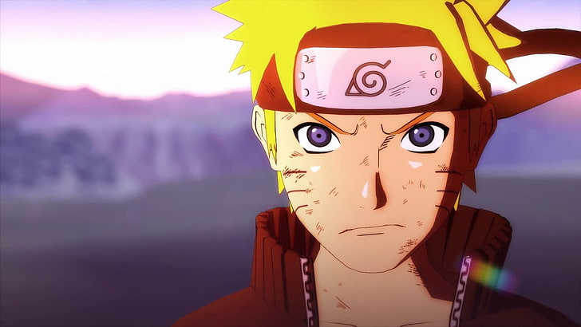

About Naruto
Naruto Uzumaki (うずまきナルト, Uzumaki Naruto) is a shinobi of Konohagakure's Uzumaki clan. He became the jinchūriki of the Nine-Tails on the day of his birth — a fate that caused him to be shunned by most of Konoha throughout his childhood. After joining Team Kakashi, Naruto worked hard to gain the village's acknowledgement all the while chasing his dream to become Hokage. In the following years, through many hardships and ordeals, he became a capable ninja regarded as a hero both by the villagers, and soon after, the rest of the world, becoming known as the Hero of the Hidden Leaf (木ノ葉隠れの英雄, Konohagakure no Eiyū, literally meaning: Hero of the Hidden Tree Leaves). He soon proved to be one of the main factors in winning the Fourth Shinobi World War, leading him to achieve his dream and become the village's Seventh Hokage (七代目火影, Nanadaime Hokage, literally meaning: Seventh Fire Shadow).
His Main Jutsu
- Rasengan
- Rasenshuriken
- Sage Mode
- Shadow Clone Technique
- Six Paths Sage Mode
Team 7 Members
Upon Graduating from the academy, each ninja are given their own group which is consist the member of three